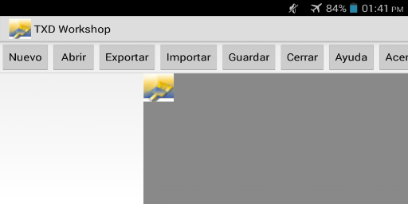
La interfaz como podras haber notado consta de 8 botones de los cuales ya sabes para que son los ultimos 3 [ Cerrar ] [ Ayuda ] [ Acerca de ]
El primer boton es para crear un archivo txd vacio (funcion )
para abrir un archivo txd ( puede ocurrir un error al abrir txd daniados "No muy Comun" Saber mas )( funcion )
Al abrir un archivo txd puedes exportar o sacar una imagen de textura en .png ( saber mas )
Primero tienes que tener un archivo txd abierto luego dar en este y busca una imagen .png de textura o algunos .jpg ( ver como se usa )
No es necesario que lo cliquees cuando modificas el archivo txd ( cada vez que modificas se guarda automaticamente ) pero sirve para guardar el txd
El primer boton es para crear un archivo txd vacio ... primero
Dar click en el boton [ Nuevo ] obviamente.
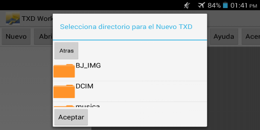
Se abrira algo parecido y escojeras un directorio para el nuevo TXD
Y luego dar en aceptar
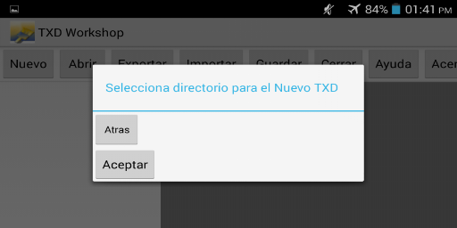
Luego asignan un nombre
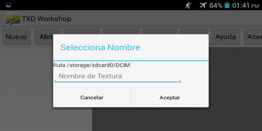
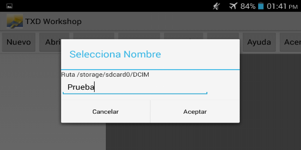
Y dan en aceptar
Les aparecera esto
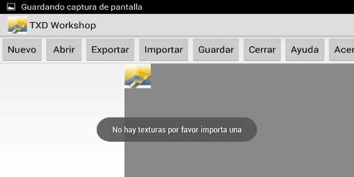
Ahora hagan lo que quieran con el archivo importen exporten eliminen renombren texturas dentro del archivo
Dar en el boton [ Abrir ] y les aparecera esto
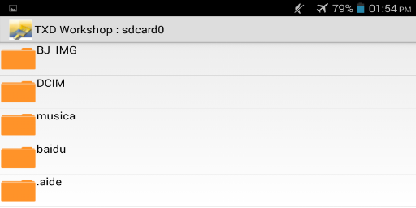
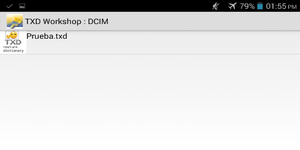
Escojes el archivo txd y Aparecera esto
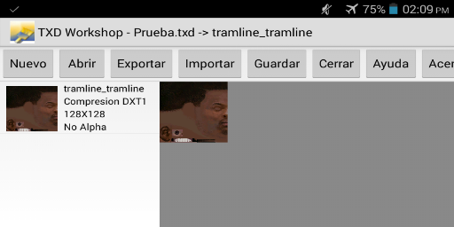
Yo ya importe una imagen al archivo txd que creamos anteriormente
Exportan la textura asi Dan click en la imagen de textura que exportaran hasta que aparesca en grande al lado
Dan click en [ Exportar ] y seleccionan en donde se guardara la imagen
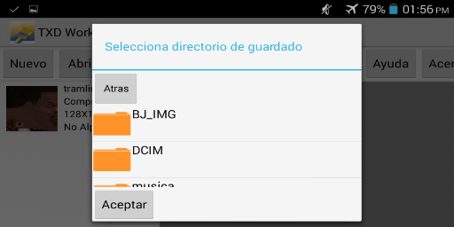
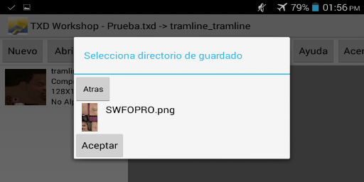
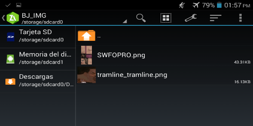
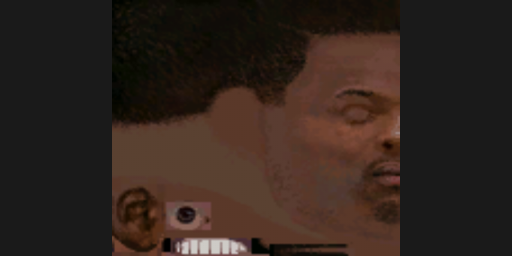
Y dan click en Aceptar y Se guardara correctamente ( Hay un Error en TXD Tool que no permite exportar texturas mira mas abajo )
Dan click en [ Importar ] y seleccionan una imagen yo seleccionare las texturas de un ped del juego
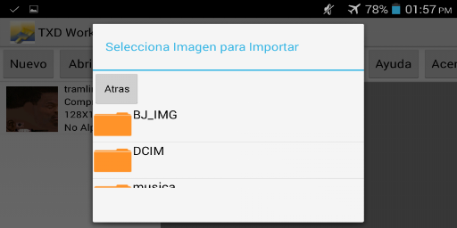
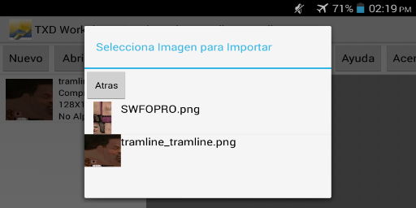
Dan click en Aceptar y aparecera esto:
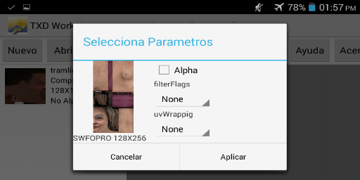
Seleccionan los parametros si seleccionan alpha se importara la transparecia de la imagen
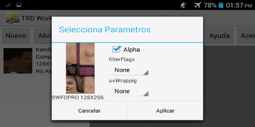
Como esta imagen no es tranparente por ninguna parte no le doy alpha
Los 2 de Abajo no se para que sirven pero los puse si alguien sabe para que sirven me avisa
Al terminar le dan en aplicar y esperan dependiendo del tamanio de la imagen y la compresion si es alpha no tarda mucho si no es alpha tarda un tiempo
Cabe resaltar que no todas las imagenes se podran importar tiene un limite de imagen de 1024x1024 maximo si se importan de mas tamanio o mas grandes dara error
Y tambien no todas las dimensiones de imagen son soportadas:
1024x1024
512x512
256x256
128x128
64x64
32x32
16x16
8x8
4x4
2x2
1024x512
512x256
256x128
128x64
64x32
32x16
16x8
8x4
4x2
2x1
Otros
512x1024
256x512
128x256
64x128
32x64
16x32
8x16
4x8
2x4
1x2
Si todo esta correcto se importara bien
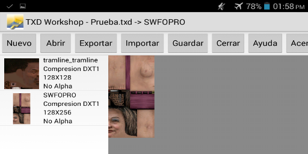
Para renombrar o editar la textura presiona en la lista la textura que desea renombrar hasta que aparesca lo siguiente:
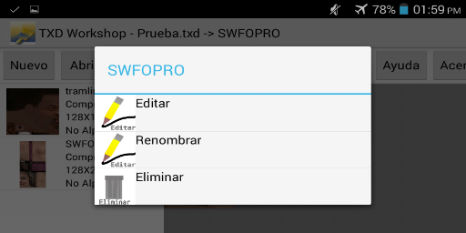
Al dar en editar solo saldra esto y solo poderemos editar el nombre por que si editamos los datos como dimensiones compresion o raster podemos llegarlo a daniar y seria irreconocible por el juego
por eso los valores son por defecto
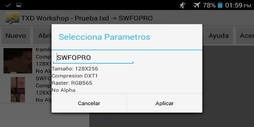
Al dar en la opcion renombrar solo podremos cambiar el nombre
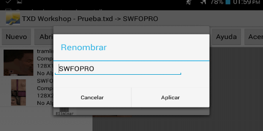
Este error ocurre cuando intentas modificar un archivo y se detecta que no cumple con los parametros requeridos( por que si lo modifica da una Excepcion y Dania el archivo entero )
Es por que la imagen sobrepasa el limite de 1024x1024 tamanio maximo
La imagen no cuenta con las dimensiones validas o soportadas , redimensionalas con una aplicacion de edicion de fotos: ( Recomiendo el photo editor ) ya que no le quita la transparecia a la imagen
Has daniado la textura de alguna forma y la aplicacion no la reconoce para por lo menos ver las texturas que no se daniaron y siguen en el archivo
Hacer lo siguiente
Abrir un archivo txd bueno y que tenga mas texturas que el que esta daniado
Al abrirse , abres el que esta daniado y al cliquear la primera imagen debe aparecer una imagen diferente asi:
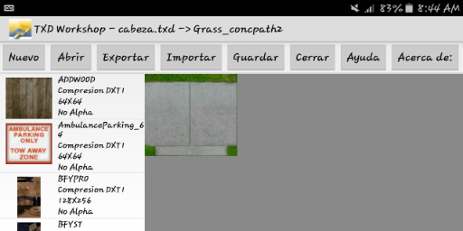
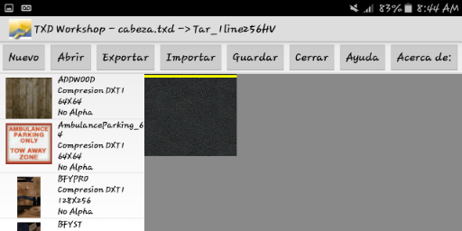
El error que ocurre es que algunas texturas no las exporta aunque paresca de menos pero si la textura es de un mod y no te permite exportarla correctamente y solo te sale una imagen en negro
Ocurre cuando una textura no tiene el raster compatible y lo cual causa una limitacion .( esto tambien causa el error "No se puede modificar el archivo(NW))
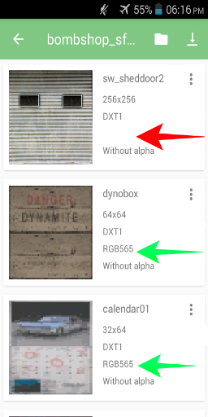
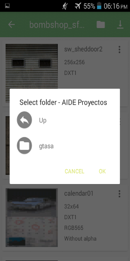
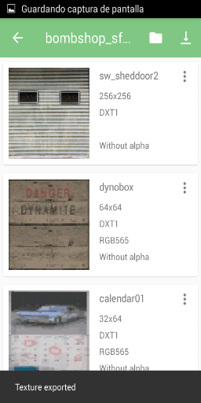
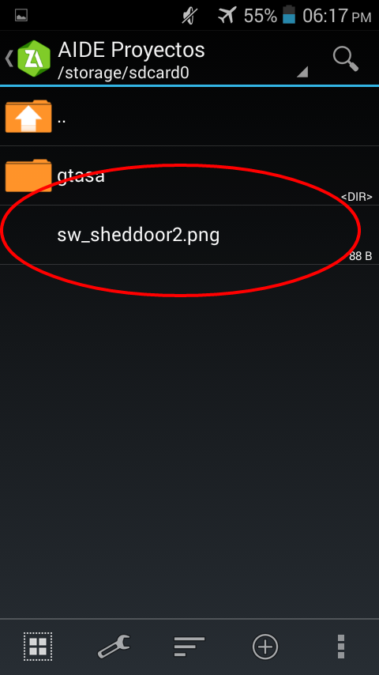
Como ven el archivo esta en negro quiere decir que esta mal exportado
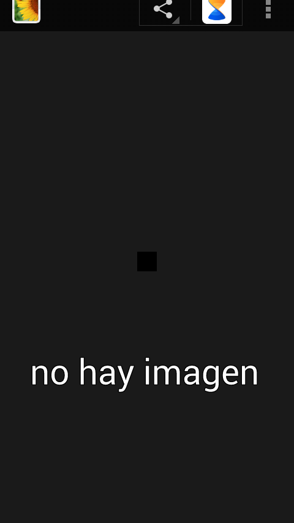
pero con el txd workshop sin ningun problema compruebalo con alguno que te de este error en el txd tool aunque no es muy comun o que pase mucho
Espero disfrutes el txd workshop a como yo disfrute haciendolo